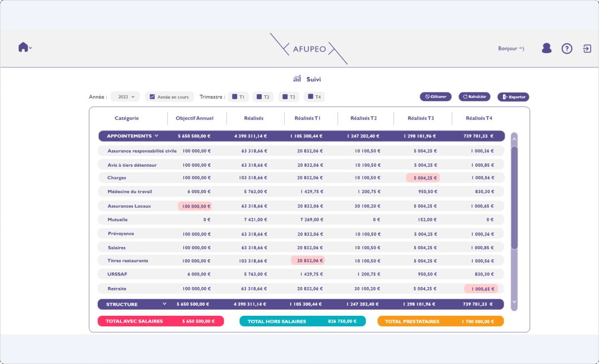
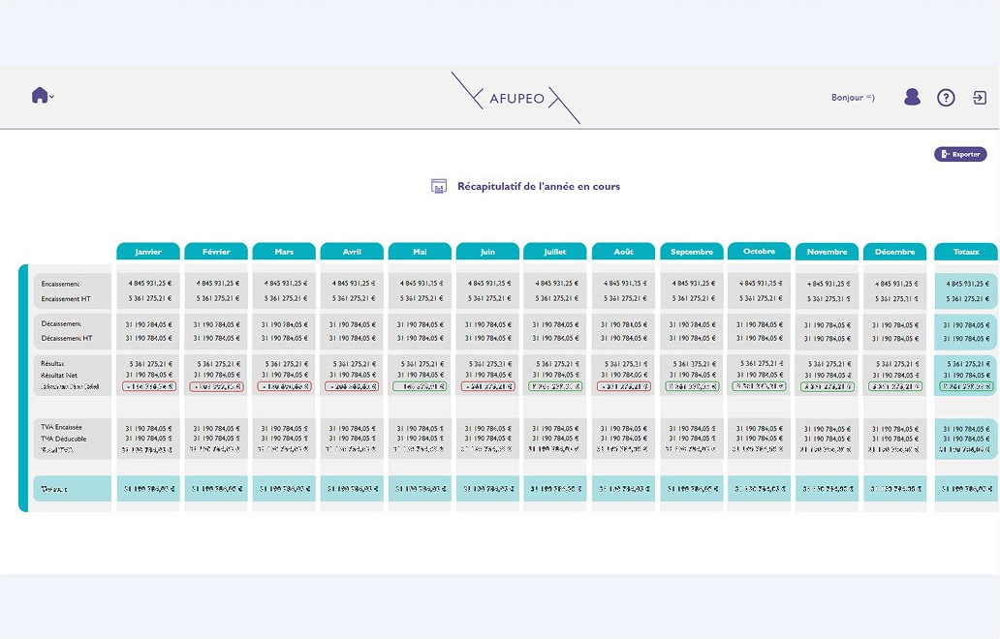

Projet 03 · Application interne de gestion financière
Afupeo
Transformation d'un système de gestion comptable basé sur Excel en un outil structuré et exploitable par les équipes.
Contexte
Afupeo est un outil interne de gestion financière conçu pour centraliser et simplifier des données auparavant gérées via des fichiers Excel. Avant le projet, les équipes utilisaient des tableaux complexes, limitant la lisibilité, la collaboration et le suivi des données.
Problème produit
- Données difficiles à exploiter dans Excel
- Manque de visibilité sur les informations clés
- Collaboration limitée
- Forte dépendance à des manipulations manuelles
Un système existant fonctionnel, mais inadapté aux usages réels.
Démarche — Discovery
- Étude des fichiers Excel existants et compréhension des logiques métier
- Analyse des tâches quotidiennes et identification des points de friction
- Identification des enjeux clés : surcharge cognitive, difficulté de lecture, manque de structuration
Insight clé : le problème ne venait pas du volume de données, mais de leur manque de structuration et de lisibilité.


Décisions & arbitrages
- Ne pas reproduire la logique Excel — repenser complètement la structuration
- Prioriser les informations essentielles pour améliorer la lisibilité
- Simplifier les écrans pour réduire la charge cognitive
- Limiter la densité d'information par écran
- Adapter aux contraintes techniques tout en conservant une logique produit claire
Impact
- Meilleure lisibilité des données
- Utilisation plus fluide qu'un tableur
- Réduction des manipulations complexes
- Meilleure fiabilité des informations
- Amélioration de la prise de décision